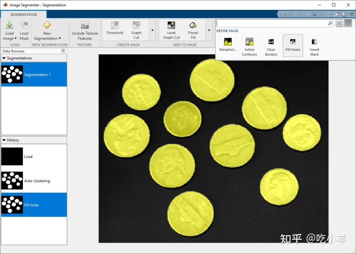

Home
本示例展示了如何使用Image Segmenter应用程序中的Auto Cluster选项来分割图像。该自动聚类选项是自动分割技术，该技术可以使用到段图像分成前景和背景元素。该自动聚类选项不需要初始化。
将图像加载到图像分割器应用程序中
coins = imread('coins.png');
从 MATLAB® 工具条中，打开Image Segmenter应用程序。在应用程序选项卡上的图像处理和计算机视觉部分，单击Image Segmenter图标

在应用程序工具条上，单击加载图像，然后选择从工作区加载图像。在从工作区导入对话框中，选择您读入工作区的图像。该Image Segmenter应用显示您所选择的图像。
您还可以使用以下imageSegmenter命令打开应用程序，指定图像：
imageSegmenter(coins);
使用 Auto Cluster 分割图像
在Image Segmenter应用程序工具条上，展开 Create Mask 部分并选择Auto Cluster。
图像分割器应用程序自动分割图像，显示结果。Auto Cluster 选项已正确分割所有圆。但是，有些圆圈有孔。
使用Refine Mask 工具条组中的Fill Holes选项清理分割图像中的孔。

将蒙版图像保存到工作区
当您对分割满意时，单击Show Binary查看蒙版图像。要保存二进制蒙版，请使用导出选项。您还可以获得用于分割的代码。
======================================================================
我的测试结果及程序
下面是我测试的代码：

注：本文根据MATLAB官网内容修改而成。